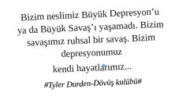

Son yıllarda; anneler, babalar, eğitimciler, koçlar, kanaat önderleri ve psikologlar tarafından modern insan beynine işlenen ve popüler kültürün her köşesinde tekrarlanan bu sözler, günümüze damgasını vuran toplumun temellerini oluşturuyor.
Tanımlanmış klişelerle dolu, öykünülen sanal dünya beklentileri ile bireysel gerçeklik arasındaki mesafe toplumun depresyon derinliğini ve şiddetini belirliyor. Depresyon bünyede bir kere yer yaptığı zaman sık sık tekrarlayabilen hüzünlü bir araf ruh hali olarak hayatımızdaki yerini alıyor.
Demlenmemiş duygular, olgunlaşmamış yetkinlikleri harekete geçiriyor ve genellikle filmin sonu hüsran ile bitiyor. Beyaz yakalı profesyonelin depresyonla ilişkisi de işte bu beklentilerin ve sürekli beslenen, daha ileriye, daha yükseğe, daha fazla paraya ve konfora ulaşabilmekle örülü umut dünyasının yavaş yavaş örselenmesiyle yaşanıyor. Bununla birlikte dijital ortamlardaki ilişkilerden doğabilen bambaşka depresyon tetikleyicileri de mevcut.
Depresyon Motivasyonları
Sevgilimden ayrıldım. Boğazımda ve midemde bir yumruğun acısı var. Her şeyi etkiliyor. Konuşmak, insanlarla görüşmek, sosyalleşmek istemiyorum. Kapı gıcırtısına bile ağlıyorum. Müzik dinlemiyorum çünkü en oynak şarkı bile onu hatırlatıyor. Bu böyle sürüp gidiyor. Tekrar ağlıyorum... Bitti sanıyorsun. Bitmez ve bitmiyor.
“Kimse beni sevmiyor!”, “Hayatta yalnızım!”, “Kimsenin bana ihtiyacı yok!” söylemleri de sürecin ilerleyen safhasında boy gösteren ifadelerdir.
“Pakize herkes tarafından örnek gösteriliyor ve herkes Pakize gibi olmamı, aksi takdirde terfiyi, iş başarısını unutmam gerektiğini söylüyor. Bu Pakize neden bu kadar Pakize???”
“Aramızda 10 yaş olabilir, ama yine de bu genç, hoş çocuk benden hoşlanmaz mı?” Peki hoşlansa da bu ilişki sürdürülebilir olur mu?
“Instagram’a yüklediğim fotoğrafları kimse beğenmiyor.”
“Sudenaz Facebook’tan göndermiş olduğum arkadaşlık teklifimi bir aydır kabul etmedi.”
“Twitter’da bizim çocuklarla rahat sohbet edebilmek için açmış olduğum ‘private account’a kendisini eklemediğim için Buse beni terk etti.”
“Şirketin mayor’lığını Hamitcan’a kaptırdım.”
“Şevki, Level 6 Jet Setter Badge’i aldı biz hâlâ İstanbul-Ankara havalimanlarına check-in olup duruyoruz.”
“Serpil, Facebook’a Seyşeller fotoğraflarını yüklemiş. Çok uyuz oldum :((((( ”
“Çaycı Recep Abi bile hayvan gibi prim almış.”
“To-Do List’i yine zamanında yetiştiremedim.”
“Toplantı yapmaktan iş yapamıyorum. Ben operasyona boğulacak adam mıyım?”
“Proje Kick-Off toplantısı öncesinde kuaföre gidecek zaman bulamadım. Nasıl başlarsan öyle gider :(((( ”
“Bu hafta sonu da hayvan gibi yedik, hangi spor toparlar bu enkazı...”
“Recep, maçı locada izliyormuş, biz hâlâ mal gibi eski açıkta yağmur yiyoruz...”
Umudun bittiği yerde depresyon filizleniyor. Depresyon filizleri gelecek beklentilerinin geri dönüşüm kutusu ile tanıştığı ortamda yeşermeye başlıyor.
Depresyon Süreci
Saç, sakal (veya kaş, dip boyası vb) itina ile birbirine karıştırılır.
Koltukların ve kalp gözünün yerleri boş duvarlara bakacak şekilde değiştirilir.
Dağınıklığın ve pisliğin (saç taranmaz, aynaya bakılmaz, diş fırçalanmaz); düzen ve konfor haline geldiği ev sistemine geçilir.
Şık kıyafetlerin yerini, eşofman üzeri depresyon hırkası alır. Depresyonun ilerlemesi durumunda depresyon hırkası, yerini deli gömleğine bırakır. Depresyon hırkası, profesyonel depresyon sürecinde bir milattır.
Gün ışığına mesafe konur ve sürekli uyunur. Rüyalarda ışık, huzur, mutluluk aranır.
Yeme ve içme motivasyonu emanete bırakılır.
Masum hıçkırıklarla başlayan ağlama seansları, böğürerek kasılma seanslarına evrilir. Ağlamak, gülmekten çok daha kolay bir hal alır.
Resimler, kıyafetler, hediyeler dile gelir; acını hafifletir, derdini dinler.
Depresyonun sessize aldığı duyguların haykırışı; telefonları da sessize aldırır. Arayanlar bir dost, bir arkadaştan ziyade sadece birer numara halini alır.
Kendinden, düşüncelerinden, iç sesinden, dostlarından, ailenden ve tüm toplumdan kaçış süreci başlamış, “Duyguların haykırışını dizginlemek için derhal sığınaklara!” emri tebliğ edilmiştir.
Bütün suçlar itinayla bünye üzerine alınır ve her nefeste, her sebepten, varlığından dahi hüküm giyilir.
Bünyedeki bütün enerji bir tutam huzur karşılığında hayata emanet bırakılmıştır.
Sürecin başlangıcında tüm şaşaa ve şıklıkları ile yer alan bütün motivasyon unsurları, pislik ile dolu dipsiz dehlizlere dönüşmüştür.
Hayata dair yapılmış ve yapılacak tüm plan ve programların son kullanma tarihleri kaotik duygu yoğunluğu tarafından geçirildiği için, kullanım tarihi geçmiş tüm plan ve programlar yalnız planlar rıhtımında ölüme terk edilir.
Zihinsel mantık silsilesinin duygu girdapları tarafından esir alındığı ve kurtulma şansının olmadığı illüzyonuna kanıldığı durumlarda; sabahları “Prozac”, akşamları da hisleri rafa kaldıran “Xanax” ile beyinler düşünemeyecek kadar uyuşur, akabinde uyanıp beyindeki seratoninler tamamlanmaya uğraşılır, kimyasallardan medet umulur. Kimyasallardan geriye de, yüzlere yapışan aptal mutluluk ifadesi ile salyalarını akıtarak her mekânda uyuyan bir beden kalır.
Depresyon Yüzleşmeleri: “Dövüş Kulübü”
“Kendini geliştirme; bir çeşit mastürbasyon, kendini yok etme belki cevap olabilir...”
“Ancak her şeyini kaybettiğin zaman, canının istediğini yapmakta özgür olabilirsin...”
“İnsan sevdiğini öldürür diye bir söz vardır ya... Aslında bakın, insanı öldüren hep sevdiğidir...”
“Bir gün öleceksin ve bunu kavramadığın sürece gözümde beş paralık değerin yok!”
“İnsan uykusuzluk çekerken aslında hiç uyuyamıyor ve hiçbir zaman da uyanık kalamıyor.”
“Uykusuzken hiçbir şey gerçek görünmüyor. Sanki herşey uzakta. Her şey suretinin suretinin suretinin sureti...”
“Her gece ölüyor... Her gece yeniden doğuyordum.”
“Gülüşünde zavallı bir çaresizlik var.”
“Tek porsiyonluk arkadaşlar... Kalkışla iniş arasındaki zamanı paylaşıyoruz...”
“Prezervatif neslimizin kristal ayakkabısı... Onu takıp bir yabancıyla karşılaşıyorsun, bütün gece dans edip sonra atıyorsun...”
“Medeniyetin gittiği bu yönde maddi eşyaların önemini reddediyorum...”
“Her şeyden önce korkmayı bırakıp, günün birinde öleceğini kabul etmek zorundasın...”
